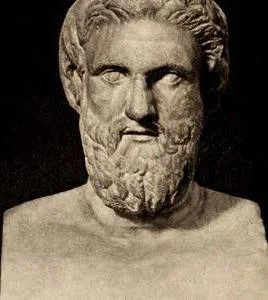

Aristophanes (c. 446 - 386 BC)

Aristophanes (c. 446 - 386 BCE) was an ancient Greek playwright from Athens and one of the most important writers of comedy. He is often called the Father of Comedy because of his influence on Greek theatre. He wrote around forty plays, although only eleven survive almost completely today. His comedies were performed during religious festivals in Athens, especially the City Dionysia and the Lenaia, where several of his works won first prize.
Aristophanes was famous for his political satire, clever wordplay, exaggerated situations, and humorous language. His plays often made fun of famous people, politicians, philosophers, and events happening in Athens. He also wrote about the Peloponnesian War and the problems of Athenian society. One of his best-known plays, The Clouds, mocked the philosopher Socrates, while The Knights attacked the politician Cleon. Through comedy, Aristophanes entertained his audience while criticizing the people and ideas that influenced their city. His plays remain valuable today because they offer a lively picture of everyday life, politics, and society in ancient Athens.
Famous Plays:
- Oresteia - Ὀρέστεια (458 BC)
- Agamemnon - Ἀγαμέμνων
- The Persians - Πέρσαι (472 BC)
- Seven Against Thebes - Ἑπτὰ ἐπὶ Θήβας [Hepta epi Thēbas] (467 BC)
- The Suppliants - Ἱκέτιδες [Hiketides] (463 BC)
- Prometheus Bound - Προμηθεὺς Δεσμώτης [Promētheús Desmṓtēs] (≃457 BC)